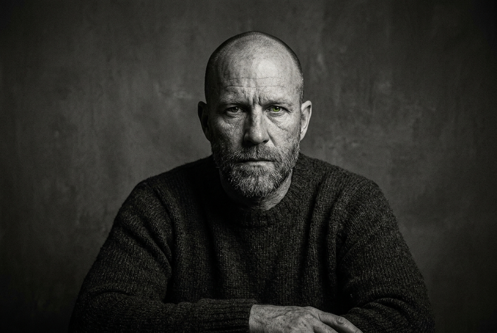
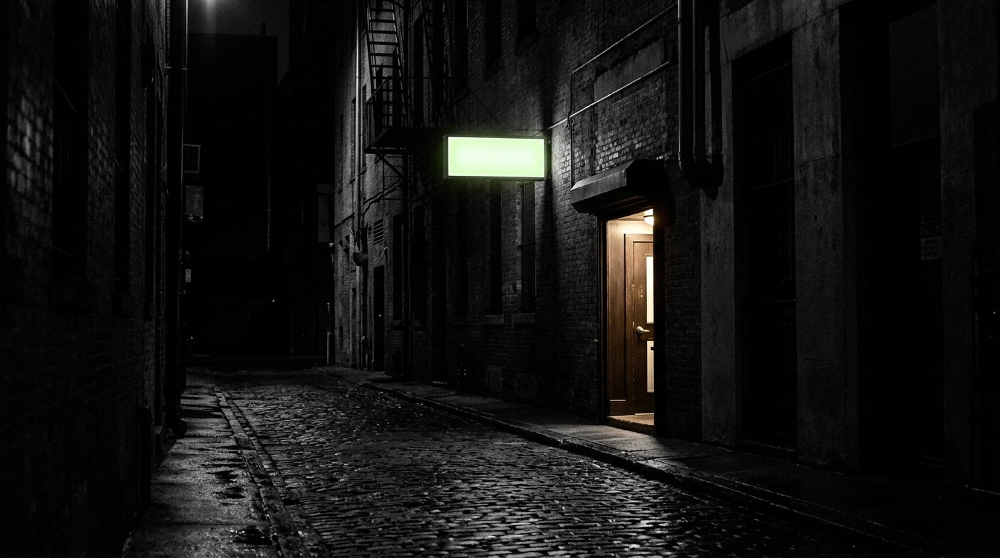

REBUILD
FROM THE
GROUND UP.
A system for turning the next 24 hours into a way out.
This is not a motivational speech. It is an execution engine for the person who has hit the floor, accepted the truth, and is ready to build upward—one clear decision, one protected hour, one kept promise at a time.
THE FLOOR IS HARD.
THAT IS WHY IT CAN HOLD YOU.
The Contract with the Floor
Nobody lands on this page because things are going perfectly.
If you are reading this, chances are your foundation didn't just crack—it shattered. Maybe you are staring at a fresh release paper from a correctional facility, looking at the city streets and realizing the old game will only put you right back in a cage. Maybe you are sitting in an empty apartment after a divorce, staring at the ceiling, wondering how twenty years of building a life evaporated into legal documents and packing boxes. Maybe you are sweating through day three of detox, your hands shaking, realizing that the substance you used to numb the pain has become the exact thing holding the knife to your throat.
Society loves to tell you that starting over is a beautiful, inspiring journey. They paint it with soft lighting and corporate buzzwords about "reinvention" and "pivoting."
That is a lie told by people who have never had their face pressed against the concrete.
Starting over is brutal. It is lonely. It is terrifying. When you are at the absolute bottom, the sheer weight of what you lost—and the massive distance to where you want to be—can paralyze you. The noise in your head is deafening. The guilt, the shame, the old triggers, and the voices of people who gave up on you will scream for your attention every single morning.
This book is not a collection of high-level theories, motivational quotes to make you feel good for ten minutes, or corporate strategies. When you are trying to survive the day without breaking your sobriety, breaking the law, or breaking down completely, you do not need a five-year corporate synergy plan.
You need an execution engine.
The Focus Deck Framework is built on a single, unshakeable premise: You cannot fix your entire life all at once, but you can master the next twenty-four hours.
By isolating your life into four uncompromising zones—Clarity, Cadence, Containment, and Compound—we are going to take the chaos out of your head and put it into a visual, daily execution workspace. No corporate databases tracking your data. No platforms owning your story. Just a local-first browser tool running right on your device, serving as your daily ledger.
Before you flip the page, we need to sign a contract. Not with me, but with the floor you are standing on. Acknowledge exactly where you are. Stop looking back at the wreckage, stop romanticizing what used to be, and stop waiting for someone to come save you.
Nobody is coming. You have to build the exit ramp yourself.
Let's begin.
The Zero Point (The Clean Slate)

"I think you have to look at what got you there. You can’t just say, 'Oh, I’m a victim of circumstance.' No, you made choices. I made choices that put me in prison. And once you take responsibility for that, then you can change it." — Danny Trejo
1.1 The Illusion of the Mountain
When you hit rock bottom, your brain plays a dangerous trick on you. It forces you to look up at the entire mountain you have to climb.
If you just got out of prison, you look at the fact that you have no job, no credit score, an ankle monitor, and a criminal record that makes landlords slam the door in your face. If you just lost your marriage, you look at the broken relationships, the split bank accounts, and the quiet rooms, and the mountain looks impossible to climb. Your brain says, "Why even bother trying? The gap is too wide. You ruined it."
This paralysis is where most people fold. They look at the massive gap between their current reality and a stable life, get overwhelmed by the noise, and sprint straight back to their old comfort zone—even if that comfort zone is a needle, a bottle, a toxic ex, or the block.
The first step of the Focus Deck Framework is eliminating the illusion of the mountain.
You are not climbing the mountain today. Today, your only job is to clear the square foot of dirt right in front of your boots.
We call this The Zero Point. The Zero Point is the exact moment you stop treating your circumstances as a permanent death sentence and start treating them as a clean slate. A concrete floor is hard, cold, and unforgiving—but it is also the only surface steady enough to support a heavy foundation. You cannot fall through the floor. You can only build upward from it.
1.2 The Wreckage Audit
To build a clean slate, you have to stop lying to yourself. You have to look at the wreckage of your life with total, clinical detachment.
Think of a mechanic looking at a blown engine. The mechanic doesn't cry, get emotional, or scream at the broken pistons. They just identify what is broken, what can be salvaged, and what needs to be thrown straight into the trash.
You must perform the same audit on your life right now. You need to categorize your current state into three raw truths:
- 1. What is completely gone? (The money you spent, the time you wasted, the relationships that are permanently dead. Stop trying to revive them. Let them stay buried.)
- 2. What is the current damage? (The debts, the legal restrictions, the physical health toll, the immediate cravings. This is the terrain you must navigate.)
- 3. What do you still own? (Your breath, your remaining time, your capacity to make a different choice in the next five minutes, and the device you are reading this on.)
When actor Danny Trejo was sitting in solitary confinement in San Quentin, facing the potential of the death penalty, he didn't sit around wishing things were different. He accepted the absolute reality of his Zero Point. He committed to changing his internal choices right there on the concrete floor, long before he ever walked onto a movie set or built a multimillion-dollar business. He took complete ownership of the wreckage.
1.3 Owning the Blame
Here is a hard, street-smart truth that corporate self-help books like to soften: It does not matter whose fault it is; it is your responsibility.
Maybe someone did screw you over. Maybe the system is rigged. Maybe your ex-spouse was toxic. Maybe your upbringing handed you an addiction before you were old enough to know better. You can carry that resentment around like a badge of honor if you want, but it will not pay your rent, it will not keep you clean, and it will not rebuild your life.
Blame is a luxury for people who have time to waste. You do not have time to waste.
When you accept the Zero Point, you make a conscious decision to stop blaming your past, your parents, the state, your addictions, or your bad luck. The second you say, "My current situation is my responsibility," you instantly strip away the power that your past has over you. If your choices helped create the mess, then your choices can build the way out.
1.4 Clearing the Deck
Your workspace on the Focus Deck Framework starts blank for a reason. It doesn't ask you what you did five years ago. It doesn't ask for your criminal record, your divorce papers, or your medical history. It runs locally inside your browser, holding your data with absolute privacy, waiting for you to input what matters now.
To wrap up Chapter 1, you are going to perform your first mental execution. Take a deep breath, look at the wall in front of you, and declare out loud that the old chapter is officially closed. The debt to the past is paid in full by the suffering you went through to get here.
You are at Zero. And Zero is a beautiful place to start.
The Audit of the Leaks
"It’s not the daily increase but daily decrease. Hack away at the unessential."
— Bruce Lee
2.1 Stopping the Bleed
When you are rebuilding your life from a major deficit, you do not have a resource problem; you have a leakage problem.
Think about a rowboat out in the middle of the ocean. If the boat has three massive holes in the bottom, it doesn’t matter how hard or how fast you row. You can have the best technique, the most intense motivation, and the strongest oars in the world, but the ocean is still going to swallow you. Your first priority isn’t moving forward. Your first priority is plugging the damn holes.
A "Leak" is anything—a habit, an environment, a mindset, or a person—that drains your focus, your energy, or your self-respect without giving you anything clean in return.
If you are a recovering addict, a leak is walking past the old corner just to "see who’s out there." If you are recovering from a toxic divorce, a leak is checking your ex's social media at 2:00 AM to see if they’ve moved on. If you just got out of jail, a leak is linking back up with the homies who are still hustling backwards because it feels familiar.
2.2 The Energy Exchange
Every single thing you let into your day is making an exchange with you. It either gives you power or it steals it. There is no neutral ground when you are at the Zero Point.
You have to run a clinical audit on your leaks across three distinct zones:
- 1. Environmental Leaks: Places and platforms that trigger your old survival mechanisms.
- 2. Relational Leaks: People who benefit from you staying broken because your downfall makes them feel better about their own stagnation.
- 3. Behavioral Leaks: The tiny, low-friction habits (mindless scrolling, poor sleep, cheap distractions) you use to avoid sitting with your own thoughts.
2.3 The Price of Admission
To get to the next stage of the Focus Deck Framework, you must accept that plugging these leaks will hurt. It will make people call you distant, arrogant, or selfish. Let them. Your survival depends on your containment lines. You cannot afford to bleed out just to keep other people comfortable.
Cutting the Noise

"People think focus means saying yes to the thing you've got to focus on. But that's not what it means at all. It means saying no to the hundred other good ideas that there are."
— Steve Jobs
3.1 The Trap of the Fresh Start
When you decide to turn your life around, a dangerous wave of fake energy hits you. You suddenly want to fix everything at once. You want to go to the gym six days a week, start a massive business, fix every broken relationship, read a book a week, and completely change your diet by tomorrow morning.
This is called the Trap of the Fresh Start, and it is a fast track to relapse or burnout.
When Steve Jobs was brought back to Apple in 1997, the company was weeks away from complete bankruptcy. They were producing dozens of different computers, printers, and software programs to try and survive. The company was drowning in its own noise. Jobs didn't add more products. He walked into the boardroom, drew a simple two-by-two grid on a whiteboard, and said, "Here is what we are doing: Consumer, Pro, Desktop, Portable." He eliminated 70% of Apple's product line to focus entirely on four pillars. He saved the company by cutting the noise.
3.2 The Single Target
When you are rebuilding, your mental bandwidth is already heavily taxed by stress, anxiety, and survival. You do not have the luxury of multi-tasking. You need Clarity.
Clarity means choosing one single target that serves as your ultimate priority for this phase of your life. If your priority is maintaining your sobriety, then your fitness, your career, and your social life must take a backseat to that single objective. If your priority is securing stable income after a release or a financial collapse, then your focus belongs entirely to finding and executing that cash flow engine.
Everything else is noise. Even good things can be noise if they distract you from the main priority.
The Target Sheet
"Give me six hours to chop down a tree and I will spend the first four sharpening the axe."
— Abraham Lincoln
4.1 From Vision to Execution
A long-term vision is a great thing to have, but you cannot execute a vision at 9:00 AM on a Tuesday. If your goal is just "rebuild my wealth" or "become healthy," your brain doesn't know what steps to take when it wakes up. Vagueness is the best friend of procrastination.
To fix this, you must translate your massive, intimidating life goals into a highly tactical Target Sheet.
We take your main priority and break it down into micro-objectives. We do not look at years. We do not look at quarters. We look at weeks. A 12-week horizon is long enough to see significant, tangible results, but short enough that you can feel the urgency of every single day slipping by.
4.2 Building Your Metric
Your Target Sheet requires you to define your Money Makers. In corporate spaces, they call these KPIs (Key Performance Indicators). In the street, we call them Money Makers because they are the exact levers that generate actual progress, stability, and momentum.
A Money Maker is not an outcome; it is an input that you control 100%.
- ● Bad Target: "Make $5,000 this month." (You cannot completely control the outcome).
- ● Money Maker Target: "Make 20 direct outreach offers to potential clients every single morning before noon." (You control this entirely).
When you shift your focus from the massive mountain to your specific daily Money Makers, the anxiety evaporates. You stop worrying about the future because you are too busy sharpening the axe.
Daily Devotions Over Motivation
"I don't hold the view that you have to be motivated to do something. You do it because it needs to be done. Discipline is the only thing that moves you forward."
— Anonymous
5.1 The Motivation Myth
Motivation is a fair-weather friend. It shows up when the sun is shining, your bank account has a little cushion, your head feels clear, and you feel inspired. But when you are rebuilding your life from the ashes, those days are rare.
Most mornings, you are going to wake up feeling heavy. The weight of your past choices will sit on your chest. Your brain will tell you that you are tired, that it doesn't matter, and that you can just start fresh next week.
If you rely on motivation to save you, you are already dead in the water.
You do not need motivation. You need Daily Devotions. A Daily Devotion is a task or routine that is completely non-negotiable. It is an unshakeable contract you have made with yourself. You execute it when you are happy, you execute it when you are angry, you execute it when you are crying, and you execute it when you are completely exhausted.
5.2 The Rhythm of Mastery
Look at any individual who pulled themselves out of severe hardship to achieve mastery. They didn't do it through massive, dramatic leaps. They did it through the boring, relentless rhythm of daily execution. They automated their choices so their emotions couldn't intervene.
Your Cadence page is where you lock in this rhythm. By standardizing your morning routines and setting up an identical daily workflow, you remove the choice entirely. You don't have to decide whether you are going to work on your life today; the system has already decided for you.
When the structure of your day becomes automated, your energy is preserved for doing the actual work, rather than fighting the voices in your head telling you to quit.
Mapping Your Peak Hours
"The key is not to prioritize what's on your schedule, but to schedule your priorities."
— Stephen Covey
6.1 The Allocation Crisis
When you are rebuilding, your energy is a scarce commodity. Most people fail because they give their highest-quality energy to low-value tasks. They spend their freshest morning hours answering angry text messages from their past, arguing with family, or dealing with bureaucratic red tape, and then try to build their business or future cash flow at 10:00 PM when their brain is completely fried.
You cannot afford to throw away your prime capacity. You have to map your Peak Focus Hours.
Everyone has a window during the day where their focus is naturally sharper, the noise fades, and their processing speed peaks. For some, it is 5:00 AM before the rest of the world wakes up. For others, it is late at night when the chaos slows down.
6.2 The Focus Block
Once you identify this window, you must declare it a restricted zone. This is your core Focus Block. During these two to three hours, you do not check your email, you do not answer the phone, and you do not run errands. This block belongs entirely to executing your core Money Makers locked into your Cadence workspace.
If you give your peak hours to your future, your future will secure your present. If you give your peak hours to the noise, the noise will keep you trapped.
Drawing the Containment Lines
"You must create a fort around your mind. If you let anyone walk in with dirty feet, your house will never be clean."
— Mahatma Gandhi
7.1 Rebuilding in a War Zone
Let’s be honest: you are not rebuilding your life in a pristine, quiet laboratory. You are doing it while surrounded by your old triggers, financial pressures, family members who remember your worst moments, and the constant pull of your former habits.
If you leave your environment wide open, the past will always break in and drag you backward. You need Containment.
Containment is the act of drawing absolute, non-negotiable boundaries around your physical space, your digital devices, and your social circles. It is a protective shield designed to keep the toxic noise out so your new foundation has room to dry and harden.
7.2 The Art of the Absolute "No"
Historically, when commanders needed to secure a broken territory, they didn't just ask people to be nice—they set up checkpoints and perimeter lines.
Your containment lines are your personal checkpoints:
- ● Digital Lines: Deleting the apps, contacts, and bookmarks that lead straight to your old leaks.
- ● Physical Lines: Staying entirely away from the neighborhoods, establishments, or houses where your old self used to hide.
- ● Relational Lines: Cutting off access to people who drain your focus, even if you share history or blood with them.
You are not being mean; you are surviving. If a boundary costs you a toxic friendship, it was a bargain.
Trigger Management & The Deflection Code
"Between stimulus and response there is a space. In that space is our power to choose our response. In our response lies our growth and our freedom."
— Viktor Frankl
8.1 The Anatomy of an Impulse
An impulse or a trigger does not arrive with a warning label. It hits you fast—a sudden flash of anger, a deep wave of loneliness, a sharp craving, or a memory of a time when things were easier. In less than a second, your brain scrambles to find a quick escape hatch, usually leading straight back to your old leaks.
When psychiatrist and Holocaust survivor Viktor Frankl was trapped in the absolute horror of concentration camps, he realized that no matter how brutal the external conditions were, the guards could not control the split-second space between a stimulus and his internal reaction. That space is where your freedom lives.
8.2 The Deflection Routine
You cannot always control when a trigger appears, but you can control the template you use to deflect it. We use a three-step Deflection Code:
- 1. Acknowledge the Flash: Do not try to fight the feeling or pretend it isn't there. Name it calmly. "I am feeling overwhelmed right now because of that email."
- 2. Enforce a Deliberate Delay: Create a mandatory 10-minute buffer before you take any action. Walk away from the screen, step outside, or change your physical location.
- 3. Substitute the Execution: Instantly redirect that intense physical energy into a low-friction, high-value movement. Open your workspace and execute one micro-task from your daily list.
By the time the 10-minute delay expires, the chemical peak of the trigger has dropped, and your rational mind is back in the driver’s seat.
The 12-Week Horizon (Money Makers Only)
"Small disciplines repeated with consistency every day lead to great achievements gained a little at a time."
— John C. Maxwell
9.1 The Death of the One-Year Plan
Traditional self-help tells you to make big, sweeping 12-month resolutions. But when you are engineering a total life rebuild from the ground up, a year feels like an eternity. It is too distant to create daily urgency, and it leaves too much room for you to say, "I'll slack off this week and make it up next month."
We destroy the yearly timeline. In the Focus Deck Framework, your entire world is built around a tight 12-Week Horizon.
Twelve weeks gives you exactly enough room to stack massive, life-altering compound growth, but it keeps the pressure high enough that every single day matters. A missed day isn't a minor slip; it's a visible dent in your execution block.
9.2 Stacking Your Ledger
Your Compound workspace acts as your raw, objective daily ledger. It tracks your consistency across your weeks. It doesn't care about your excuses, your bad moods, or your intentions. It only tracks execution: Did you do your Daily Devotions? Did you hit your Money Makers?
If you show up and log a "Yes" day after day, something incredible happens under the surface. Just like financial interest, your tiny, seemingly boring daily inputs begin to multiply. By week 4, the momentum kicks in. By week 8, your environment changes. By week 12, you look in the mirror and realize the old version of you has been completely replaced by the architecture you built.
Local-First Legacy (Owning Your Progress)
THE EVIDENCE IS THE STREAK.
"Control your own destiny or someone else will."
— Jack Welch
10.1 The Architecture of Self-Reliance
Throughout this book, we have laid out the blueprint to strip the chaos from your mind and build a disciplined lifestyle. But the final layer of the Focus Deck Framework is philosophical: Absolute Ownership.
We live in a world where corporate platforms want to track your data, store your personal thoughts in cloud databases, monetize your attention, and sell your profile back to you. When you are rebuilding your life from a vulnerable position, your private data, your daily logs, and your growth map are sacred. They do not belong on someone else's server.
10.2 The Sovereign System
That is why your Focus Deck Framework is engineered as a local-first environment. Every note you write, every priority you set in Clarity, every routine you log in Cadence, and every win you track in Compound lives exclusively inside your browser's local storage.
No corporate databases tracking you. No login portals capturing your information. Complete privacy. Absolute sovereignty.
This is more than just a tech preference; it is a metaphor for your new life. You are the sole architect, the sole operator, and the sole keeper of your progress. If you do not open the browser and do the work, the screen stays blank. The power—and the complete responsibility—rests entirely in your hands.
You have the tools, the structure, and the system. The slate is clean, the leaks are plugged, the pillars are live, and the local engine is waiting.
Step up to the deck and start executing.
STEP UP TO THE DECK.
The slate is clean. The leaks are plugged. The pillars are live. Open your first workspace and let your local-first legacy begin tonight.
Open the FocusDeck Workspaces →